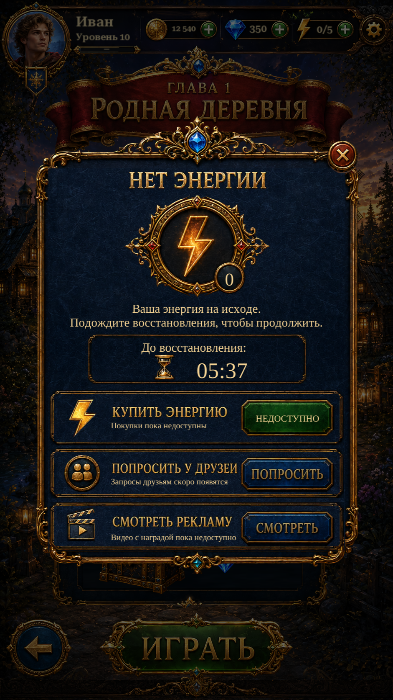

Out of Energy · reference rebuild R1Out of Energy · reference rebuild R1
Original Russian title and action lettering, source gold frame, newly isolated energy medallion and navy live-count badge. The real regeneration countdown and Close navigation remain active. Purchase, friend delivery and rewarded ads remain unavailable; the illustrative price is not advertised.
These are actual Unity captures with isolated test saves. The modal covers the real underlying page and its shared header. The original Ask/Watch captions remain on disabled Russian controls; the explanatory copy states that these services are unavailable. English labels and changing energy status remain live.
